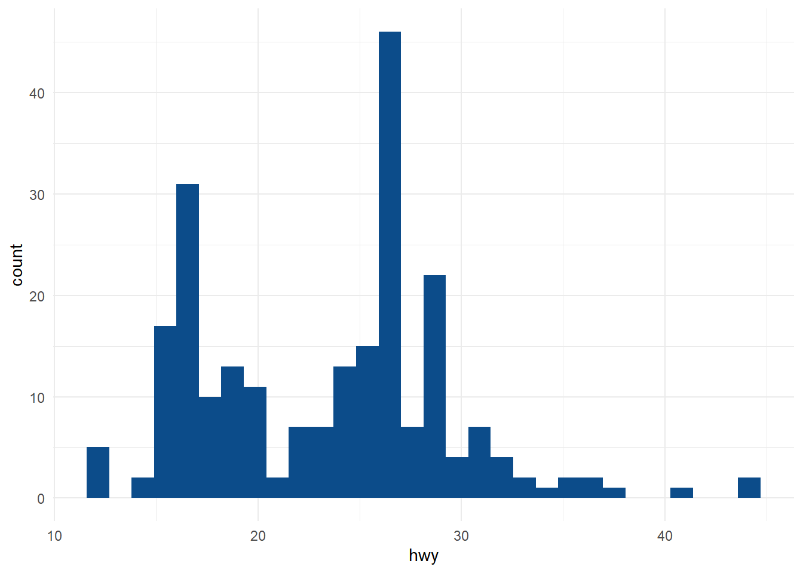
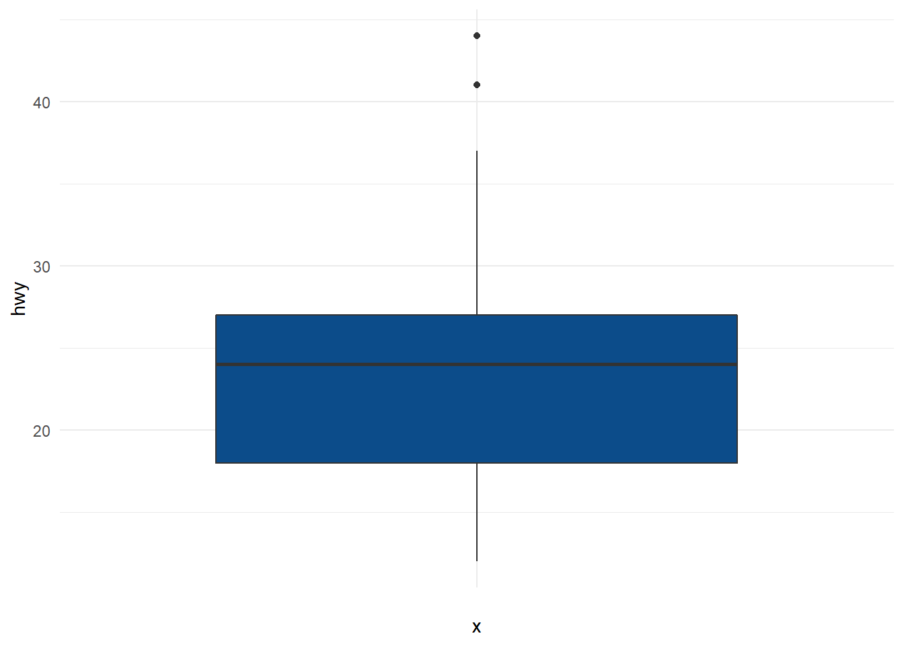

Chapter 5 Outlier Detection
5.1 Outlier definition
An outlier ia a value or an observation that is distant from other observations, a data point that differ significantly from other data points. A widely used deinition for the concept of outier has been provided by Hawkins: “An observation which deviates so much from other observations as to arouse suspicions that it wasgenerated by a different mechanism.”. It sometimes makes sense to fromally distinguish two classes of outliers: Extreme values and mistakes.
Virtually all outlier detection algorithms create a model of the normal patterns in the data, and then compute an outlier score of a given data point on the basis of the deviations from these patterns. The selected model make different assumptions about the “normal” behavior of the data. The outlier score of a data point is then computed by evaluating the quality of the fit between the data points and the model. In practice, the choice of the model is often dictated by the analyst‘s understanding of the kinds of deviations relevant to an application.
5.2 Taxonomy of outlier detection methods
5.3 Methods
5.3.1 Descriptive statistics
5.3.1.1 Histogram
A basic way to detect outliers is to draw a histogram of thed ata
library(ggplot2)
dat <- ggplot2::mpg
ggplot(dat) +
aes(x = hwy) +
geom_histogram(bins = 30L, fill = "#0c4c8a") +
theme_minimal()
5.3.1.2 Boxplot: IQR (Interquartile range)
A boxplot helps to visualize a quantitative variable by dsplaying 4 common location summary (min, median, first and third quartiles, max) and any observation that was classified as a suspected outlier using the interquartile range (IQR) criteria.
The IQR criteria means that all obsevations above \(q_{0.75} + 1.5 * IQR\) or below \(q_{0.25} - 1.5 * IQR\) (where \(q_{0.75}\) and \(q_{0.25}\) correspond to first and third quartile respectively, and \(IQR\) is the difference between the third and first quartile) are considered as potential outliers..
ggplot(dat) +
aes(x = "", y = hwy) +
geom_boxplot(fill = "#0c4c8a") +
theme_minimal()
5.3.1.3 Hampler filter
- Hampler filter consists of considering as outliers the values ourside the interval \((I)\) formed by the median, plus or minus 3 median absolute deviations $(MAD)*:
\[I=[median - 3 * MAD; median + 3 * MAD]\]
where \(MAD\) is the median obsolute deviation and is defined as the median of the absolute deviations from the data’s median
\[MAS = median(|X_{i}-med_{X}|)\]
# lower_bound
lower_bound <- median(dat$hwy) - 3 * mad(dat$hwy)
lower_bound## [1] 1.761# upper_bound
upper_bound <- median(dat$hwy) + 3 * mad(dat$hwy)
upper_bound## [1] 46.239# outlier
outlier_ind <- which(dat$hwy < lower_bound | dat$hwy > upper_bound)
outlier_ind## integer(0)5.3.2 Statistical tests
5.3.2.1 Grubbs’s test
5.3.2.2 Dixon’s test
5.3.2.3 Rosner’s test
5.3.2.4 Z score
Z-scores can quantify the usefulness of an observation when your data follow the normal distribution. Z-scores are the number of standard deviations above and below the mean that each value falls. For example, a z-score of 2 indicates that an observation is two standard deviations above the average while a z-score of -2 signifies it is two standard deviations below the mean. To calculate a z-score for an observation, take the raw measurement, substract the mean, and divide by the standard deviation. Mathematically, the formule for that process is the following:
\[ Z = \frac{X - \mu}{\sigma}\]
where \(\mu\) is the mean of the population and \(\sigma\) is the standard deviation of the population. The further away an observation’s z-score is from zero, the more unusual it is. A standard cut-off value for finding outliers are z-scores of +/- 3 further from zero. In a population that follows the normal distribution, z-score values more extreme than +/- 3 have a probability of 0.0027 (2*0.00135), which is about 1 in 370 observations. However if your data don’t follow the normal distribution, this approach might not be accurate.
5.3.3 Proximity-based
The idea in proximity-based methods is to model outliers as points that are isolated from the remaining data on the basis of similarity or distance functions. Proximity-based methods may be applied in one of three ways, which are clustering methods, density-based methds and nearest-neighbor methods. The main difference between clustering and density-based methods is that clustering methods agment the data points, wheras the density-based methods segment the data space.
5.3.3.1 LOF (Local Outlier Filtering)
5.3.3.2 DBSCAN
DBSCAN is a non-parametric, density-based outlier detection method in a one or multi dimensional feature space. In the DBSCAN clustering technique, all data points are defined either as Core Points, Border Points or Noise Points:
- Core Points: are data points that have at least MinPts neighboring data points within a distance
- Border Points are neighbors of a Core Point within the distance but with less than MinPts neighbors within the distance
- All other data points are Noise Points, also identified as outliers
Outlier detection thus depends on the required number of neighbors MinPts, the distance and the selected distance measure, like Euclidean or Manhattan.
5.3.4 Machine learning models
Many machine learning models perform poorly for anomaly detection because of their tendency to overfit on the training data. For anomaly detection, we need to be able to distinguish and extract even the anomalies that we haven’t seen before.